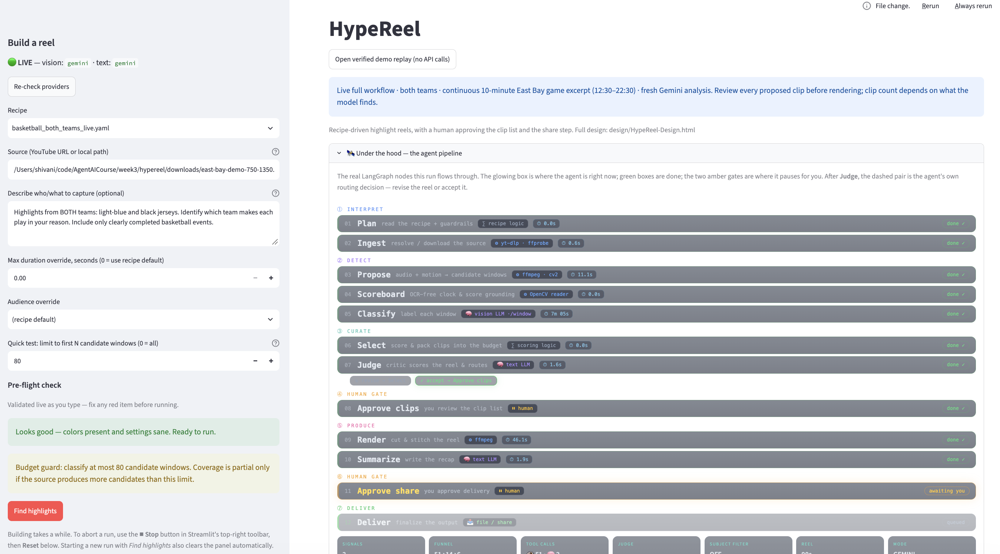

Track 2 · LangChain + LangGraph Bring-your-own use case Offline mock mode · paid Gemini live demo In scope: RAG · tool calling · autonomy vs workflow · evals
design/HypeReel-Design.html
main @ df3fc18 (2026-09-13) — "Integrate live Gemini video demos with human clip review." Technical status updated 2026-09-13; market statements preserved as requested.
Blank rows left open for teammates who join later.
| # | Full name | |
|---|---|---|
| 1 | Shivani Varambally | gshivani.work@gmail.com |
| 2 | Satya Parimi | satya.parimi@yahoo.com |
| 3 | Hiyo | hotcoa@gmail.com |
| 4 | Aamani | aamani.nemtur0119@gmail.com |
| 5 | Megan Shehab | |
| 6 | ||
| 7 |
Icebreaker. Name, location, and the one tedious task you'd hand to an AI agent tomorrow.
Shivani — Fremont — “My kids are into basketball. Besides my full-time job, my second job is getting them to practices and tournaments and coaching them as needed. Basketball takes up a good chunk of our weekends, and the task I’d happily hand over to an AI agent tomorrow is editing their game videos.
I have an advanced setup of AI cameras that can track and record their games, but recording is only the beginning. Afterward, I spend hours editing the footage for film study or social media. Creating just one highlight reel easily takes three to four hours. So this is something I’m genuinely passionate about, and I’m personally invested in figuring out how computer vision and advanced models can help.
HypeReel is my initial attempt to automate one part of what I do. In the demo, you’ll see a highlight from my daughter’s game. Her teammate intercepts a pass for a steal, then passes the ball to my daughter, who scores a two-pointer. Those are exactly the moments I want to capture—for the kids to learn from, for us to share, and simply to keep as memories. That’s what makes this project so personal to me.
But I see a lot more beyond HypeReel. These tournaments happen almost every weekend, and families are already investing significant time and money. Entrance alone can cost $15 for a game or up to $90 for a weekend—and often it’s not just one parent attending, but the whole family.
That’s why I see a potentially huge total addressable market, or TAM, around helping players and their families. The entrance fees don’t directly tell us what families would pay for HypeReel, but they show how invested they already are. Video editing is just one small piece of the puzzle. There are plenty of other things I’d love to make easier for them. Basketball is my starting point because I live this every week, but I can see this extending well beyond basketball.”
Hi everyone, I'm Satya. I've spent many years in software engineering management and architecture, primarily building large scale platforms and leading engineering teams. I'm taking this MAI course to become more handson with modern AI and agentic systems and learn how to apply them to real-world products.
For HypeReel, I focused on the AI engineering side of the project integrating LangSmith, building the evaluation framework, adding LLM-as-a-Judge, and improving automated testing so we can objectively measure the quality of our highlight generation pipeline.
I'm excited to see how we bring everything together for the final demo.

Talk through the three questions, then jot the thinking below.
Use case: automated highlight reels for youth / AAU basketball. Grassroots basketball runs on tape. Parents and coaches record full games, then hand-edit highlights for recruiting, team shares, and social. The editing is the bottleneck, and it scales brutally with the size of the sport.
Scaling out: Bigfoot Hoops alone runs 30+ national events/year, and its own materials describe hosting “thousands of teams and tens of thousands of athletes.” Across all US grassroots circuits there are 1,000+ multi-day tournaments a year — putting the manual-editing labor pool in the millions of hours annually, or a ~$75M+ addressable market at ~$75/reel outsourced. (tournament-count and pricing figures are estimates worth firming up before an external pitch)
HypeReel loads recipes and the user brief at runtime. Some domain-specific logic remains in code. Memory storage primitives exist, but are not wired into automatic personalization in the current Streamlit flow:
moment_types with natural-language rubrics (made_basket,
three_pointer, block, steal_break), which proposer signals are
active, selection budget/ordering, exclusions, and acceptance criteria. Swap the recipe → the same
pipeline retargets to a new sport or even a real-estate walkthrough (quality_based strategy)
through configurable settings; new-domain perception and signal behavior still require implementation and validation.basketball_player23_blackred.yaml).| Tool | What it does | R/W |
|---|---|---|
source_resolver (yt-dlp / local) | Resolve a local file or attempt a YouTube download; quality depends on available formats and access | read |
audio_peak (librosa) | Propose candidate windows from crowd/commentary spikes | read |
motion_intensity (opencv) | Propose candidate windows from on-court motion | read |
scoreboard_reader (OCR-free CV) | Optional per-video calibrated score-change evidence; inactive in the current both-teams demo | read |
vision_classifier (VLM) | Classify each window against the recipe's moment rubrics | read |
llm_judge | Judge selected-clip metadata against acceptance criteria; optionally request one bounded re-selection | read / reason |
renderer (moviepy / ffmpeg) | Cut + concat approved clips into a video (manifest fallback) | write* |
share / upload (gated, stubbed connector) | Delivery approval boundary; current terminal node records status only, without external upload | write |
Final reel rendering follows Gate 1 approval. Local downloads, preview clips, logs and checkpoints are written automatically before that gate. Gate 2 is a delivery approval boundary; the current connector does not upload externally. The active demo uses Gemini native video via an opt-in REST provider. Other provider interfaces support legacy Gemini, Nebius, Groq, local Ollama and offline mock operation. Factory setup fallbacks are distinct from runtime errors: the native Gemini adapter reports failed classifications rather than substituting mock detections.
HypeReel is a single agent — one LangGraph graph, one shared ReelState — with a
deterministic orchestration spine. Model-based classification and a bounded judge operate inside the fixed graph; human approval gates final rendering and delivery:
plan → ingest → propose → scoreboard → classify → select. Fixed order; model outputs can still vary. Cheap local signals propose; deterministic code budget-fits the final clip set.
The vision model classifies each window zero-shot against natural-language rubrics; the LLM judge critiques the proposed clip metadata and may send it back for one bounded revision (broadens if too thin — never tightens into an empty reel).
interrupt_before pauses the graph so a human approves/edits the clip list (Gate 1)
and approves the share (Gate 2). Internal processing is autonomous; final render and delivery are gated.
End-to-end task completion, not single-shot accuracy. The product target, not a validated acceptance-study result: a user gets a watchable, single-team reel in under 30 minutes that they'd actually post 8 times out of 10 — coverage spread across all four quarters, the opponent's baskets excluded, no dead-ball filler.
This is where the bulk of the engineering went — a full offline evaluation harness (see §5), plus live-run guardrails: a pre-flight form checker, a cached image-based provider health ping, and a diagnostic funnel showing where candidates were rejected. A successful image ping does not guarantee video access, enough budget for an entire run, or accurate detection. Subject rejection does not prove the team is absent.


Use case, where RAG fits, tools, autonomy vs workflow, and evaluation — consolidated.
| Dimension | Decision |
|---|---|
| Agent goal | Turn a full game recording + a plain-language brief into a time-boxed, share-ready highlight reel for one team or player. |
| Surface | Streamlit web app (input + review panel, pipeline visualizer, pre-flight checker). CLI for scripted/demo runs. |
| Knowledge / retrieval | Recipe YAML + user brief; optional per-video scoreboard calibration. Storage APIs for profiles/feedback exist, but automatic personalization is not integrated into the current UI. |
| Tools | Source resolver, audio/motion proposals, optional scoreboard CV, vision classifier, metadata judge, renderer, and a delivery-status stub. |
| Autonomy vs workflow | Fixed graph order; model classification and at most one judge-driven re-selection; human gates before final render and delivery. |
| Memory | Session: ReelState + in-memory checkpointer (resumable on same thread). Persistent: JSON profile/feedback storage APIs, not active automatic personalization. |
| Guardrails | Recipe/prompt constraints request grounded labels and exclusions; they are not guarantees of perception accuracy. Final render and delivery have human approval gates. Native Gemini failures are reported as errors, not mock results. |
| Success metric | Unvalidated product target: watchable single-team reel in <30 min, would-post 8/10. Coverage across all quarters, opponent excluded. |

HypeReel treats evaluation as a first-class subsystem, not an afterthought. There is a dedicated
evals/ tree and an installable hypereel.evaluation package with its own CLI,
deterministic metrics, an optional LLM-as-a-Judge, and reproducible reports. The core benchmark runner stops at the first approval gate. Separate demo integration checks 029–032 stored under evals/ also validate local rendering; these are not accuracy benchmarks.
Datasets are split to avoid tuning on the test set, and cases are built from externally-labeled real AAU games (labels provided independently of the pipeline), then frozen:
east-bay-elite-vs-spartans,
unlimited-vs-campus, plus a synthetic development case. Externally-labeled
reference events live under evals/golden/source/.east-bay-elite-13u-vs-ptown-wu),
reserved to be scored once after validation; it has not been evaluated.game-1-iteration-01…20,
game-2-iteration-07…19) so score progression across the build is auditable.Metrics are computed per case with no model in the loop (the LLM judge in §5.3 is advisory only).
Any ratio whose denominator is unavailable reports N/A, never a silent 0. Versions differ by harness: selection-v6 for highlight selection and a provisional event-time version for all-events pilots. The catalogue below spans these harnesses and is grouped into five families:
| Family | Metrics | What it answers |
|---|---|---|
| Matching foundation | One-to-one, label-aware temporal matching (maximum-cardinality bipartite — no clip or event
counted twice; stable input order breaks ties). Point labels expanded to provisional action windows
[t−5s, t+4s]. Candidate / selected-event recall at IoU 0.10 / 0.30 / 0.50. |
Fair credit assignment before any score is computed. Two matchers exist and are never pooled: a legacy IoU-aware matcher (highlight selection) and an event-time matcher (all-events pilots). |
| Quality / recognition | Relevant-clip precision (exhaustive labels only, else N/A), selected-event recall, selection F1 (micro), macro-F1, per-moment-type P/R/F1, confusion matrices, balanced accuracy, negative-window specificity (false positives on no-event footage), average precision, calibration error (ECE), and a candidate-threshold sweep. | How many true highlights reach the reel, how many selected clips are right, and whether reported confidence is trustworthy. |
| Temporal quality | Mean temporal IoU, event-time / boundary error, action completeness (does the matched clip contain the whole reference action?), moment-type diversity / four-quarter coverage. | Are the clip boundaries actually on the play, and is the reel spread across the game? |
| Entailment axis (pilots 015–016) | A separate measurement: does the model's own cited observation actually support the event it claims? Recorded as its own axis (over-permissive lexical screen) — never used to filter or boost the primary scores. | Distinguishes a correct label from an asserted one — the crux of the perception bottleneck (§5.6). |
| Structural & operational | Classification schema-pass rate, invalid-boundary count, overlap rate, duplicate/overlapping-clip checks, budget compliance & utilization, operational success rate (passed / attempted), per-call latency (provider/run specific; the 032 graph completed in 469.46 s including local processing and 53 provider calls), model-call count, token usage, cumulative estimated spend, and cost-per-true-positive. | Is the output well-formed, on-budget, reproducible, and affordable? |
Human review is tracked separately from these deterministic metrics (visual correctness, action completeness, "would you post it?") and is never conflated with a passing metric. A graph fallback reaching human review is not counted as model acceptance.
Optional (--judge), run after deterministic metrics. Returns validated JSON —
relevance, coverage, coherence, diversity,
overall_score, reasoning, recommendations — scored in [0,1] or
null when unsupported. Anti-gaming guardrails:
coverage requires exhaustive reference annotations, else it returns null.The eval harness commits to explicit development release gates — a run must clear all of them on an independent slice before a full-game or holdout run is authorized:
| Gate | Threshold |
|---|---|
| Candidate recall @ IoU 0.30 | ≥ 0.80 |
| Selected-event precision / recall / F1 | each ≥ 0.70 |
| Selected-event recall @ IoU 0.30 | ≥ 0.70 |
| Classification schema pass rate | = 1.00 |
| Invalid boundary count · selected overlap rate | 0 · 0 |
| Total estimated provider spend across the loop | Current policy: ≤ USD 2.00 incremental from baseline USD 7.192294875 (cumulative ceiling USD 9.192294875); earlier USD 8 ceiling is historical |
The metrics catalogue across selection and event-time harnesses includes: candidate recall at IoU 0.1/0.3/0.5, per-moment-type precision/recall/F1, macro-F1, balanced accuracy, temporal IoU, event-time / boundary error, negative-window specificity, calibration error (ECE), a candidate-threshold sweep, plus operational success rate, provider spend, and cost-per-true-positive.
The audit trail includes original selection-tuning iterations, perception/model pilots 001–028, and demo integration 029–032. IDs include diagnostics, failures and recovery runs; they are not independent benchmark replications. Logging varies by harness: the core evaluation runner records history.jsonl and change notes, while standalone pilots and UI integrations use plans, raw responses, checkpoints and implementation notes. Dataset hashing is recorded where supported by that harness. Cumulative estimated spend at this documentation checkpoint is $8.987366625: $1.79507175 used from the incremental $2 cap, approximately $0.20493 remaining. A comparable new ~$0.53 full demo run does not fit this remaining allowance. These are ledger estimates, not invoice totals; do not reset the ledger.
The observed pattern. Hosted and local models made event errors, including outcomes unsupported by the supplied evidence. Local feasibility testing established execution but did not establish useful recognition on the tested references. These observations motivate improved temporal evidence; they do not prove every earlier matched label was fabricated or that prompting can never help.
Next I reached for YOLO for stronger object tracking, on the theory that detector evidence plus a vision model might ground events better — it didn't (the ball was trackable in only a handful of frames). Then, from a background in event-driven development, I reframed the hard cases as state transitions: a steal requires a defender disrupting opponent possession and gaining control, not merely any possession change. The model struggled to bound that as a single valid event, so I tried building a text/visual transcript and reasoning over the transcript to recover the correct event time.
The transcript route did raise precision in early subsets (roughly 25%→50% P, ~24%→40% F1 on the quota-blocked partial set), which is why it looked promising. But once the $5 credit funded the full 8-window run, the honest picture settled: native-video Gemini at F1 .37 (P 38.5% / R 35.7%) has higher measured F1 in that shared comparison, and adding a transcript traded away recall (F1 .35) — so it was not adopted. Early-subset numbers ran a little hotter (~40% F1 on 6 of 8 windows) than the funded full set; the full-coverage figures above are the ones I stand behind.
The work moved through five phases. Each phase's headline result is the honest one — including the runs that failed:
| Phase | Iterations | What was tried | Best / headline result |
|---|---|---|---|
| 1 · Prompt & sampling tuning Nebius MiniCPM-V-4.5, cloud |
1–21 | Highlight-selection classification: frame count, temporal context (4→9 frames), before/action/after frame roles, spread vs dense sampling, shot-evidence guards, contrastive negatives (rebound/miss/ turnover), deterministic temperature, centered-clip shaping. | Tuned slice (18): P .667 / R 1.0 / F1 .80. Independent slice (20): P 1.0 / R .50 / F1 .667 — fails the recall & F1 gates on unseen data. |
| 2 · Local feasibility Ollama qwen3-vl:4b, $0 |
001–008 | Can a free local VLM run the pipeline offline? 360p source, 3→5 central frames, per-call checkpoints, memory-pressure handling on an M1 / 16 GB. | Execution proven (001: 4 windows in 321 s); recognition failed — 006–008 scored TP0/FP0/FN2 on both dev games. 002–005 aborted on memory pressure. |
| 3 · All-12-event detection multi-category matcher |
009–012 | Widen from highlight selection to perceiving all 12 event/outcome types; matched byte-identical MiniCPM vs local Qwen at 4 and 6 frames. | Local F1 0. MiniCPM over-predicts: 4-frame F1 .16 (TP4/FP32), 6-frame F1 .147 (TP5/FP49) — more frames, more false positives, lower F1. |
| 4 · Evidence representation the core experiments |
013–020 | Several representations tested for better evidence: YOLO ball-crops (013/014), visual transcripts (narrate→extract, 015), denser frame sampling (016), closed-vocabulary ball-state grounding (017), corrected v2 rules + rim crops (018/019), and YOLO11n + ByteTrack track-augmented transcripts (020). | All hit the same wall (§5.6). Transcript 015 lifted F1 to .40 on 2 windows but 0–1 events were entailment-supported; grounding (017) scored an honest 0; track-augmented (020) reached F1 .353 but ball was tracked in only 8 of 1,023 frames. |
| 5 · Native-video model Gemini gemini-3.8-flash |
021–028 | Swap frame sequences for native muted video at 4 fps via a new REST adapter with quota-aware retry; strict-JSON output. Quota first blocked full coverage; a $5 API credit then funded the recovery runs (025/026/028) to complete all eight windows, with fourteen references spanning twelve categories. | Best in track — and now on full coverage: direct video F1 .37 (P 38.5% / R 35.7%) across all 8 windows, +24.5 F1 points over MiniCPM's .125 on the same set. Generated transcripts cost more and lowered recall (F1 .35) → not adopted. Still ~half the 0.70 gate. |
An equally important part of the record is what was tested and not adopted — kept in the audit trail rather than quietly deleted:
| Approach | Why it was rejected |
|---|---|
| Any-overlap matching (iter 13) | Reported a perfect 1.0/1.0/1.0, but mean temporal IoU was only 0.059 — the "win" was a metric bug. Iteration 14 replaced it with IoU-aware matching; the bogus result stays in the log, unrewritten. |
| Alternative-label verifier (iter 21) | Regressed to 0.0 recall; rejected and the code reverted (result retained in the trail). |
| Generic YOLO ball-crop pipeline (013/014) | 12-image and crop requests hit provider BadRequestError; YOLO found a ball in only 6 of 96 sampled frames. No reliable ball evidence to crop around. |
| MiniCPM narrate→extract as a detector (015) | Numerical lift was real (23.5%→40% F1) but not entailment-grounded — accepted events cited observations that didn't establish them, all at confidence 1.0. Kept as a diagnostic, not a detector. |
| "Denser frames alone" hypothesis (016) | Not supported as a general improvement by this pilot: outputs contained 26 mutually exclusive label pairs and grounding remained weak. This does not establish that temporal density is irrelevant on other configurations. |
| Six-frames-as-quality-win (all-events) | More frames added false positives and lowered F1 — not promoted. |
| Gaming the score | Explicitly refused: raising event limits, discarding unmatched predictions, or integrating tracking merely to lift the reported number. |
| Nebius Qwen3.5 · Cosmos / Qwen2.5-VL-7B | Qwen3.5 failed a capability probe (HTTP 400, no image/video input). Cosmos-Reason2 and Qwen2.5-VL-7B deferred — no credits — with LoRA fine-tuning gated on untuned comparisons justifying it. |
| Vector-DB RAG · multi-agent · LangSmith upload | Vector retrieval and multi-agent orchestration were not adopted for the small fixed rubric. Tracing infrastructure exists, but tracing was disabled in the verified native-video demo; these are separate decisions. |
Some earlier development slices reached 1.00 candidate recall; that does not establish complete full-game proposal coverage. Perception, candidate timing and subject scope remain limitations. The two scorecards below use different matchers and scopes and must not be pooled.
| Metric | Result | Gate |
|---|---|---|
| Candidate recall @ IoU 0.30 | 1.000 | 0.80 ✅ |
| Precision | 0.667 | 0.70 ❌ |
| Recall | 1.000 | 0.70 ✅ |
| F1 | 0.800 | 0.70 ✅ |
| Schema pass rate | 1.000 | 1.00 ✅ |
Fails only the precision gate — and it's a tuned slice.
| Metric | Result | Gate |
|---|---|---|
| Candidate recall @ IoU 0.30 | 1.000 | 0.80 ✅ |
| Precision | 1.000 | 0.70 ✅ |
| Recall | 0.500 | 0.70 ❌ |
| F1 | 0.667 | 0.70 ❌ |
| Neg-window specificity | 1.000 | monitored |
Fails recall & F1 on unseen data.
Since iteration 21 the work pivoted to the harder question underneath selection: can a model perceive all 12 event types at all? Four representation changes were tried — visual transcripts, detector-cropped frames, denser sampling, and closed-vocabulary ball-state grounding — plus YOLO/ByteTrack ball tracking and Gemini native-video classification. A $5 API credit funded the recovery runs, so the headline is now a complete eight-window comparison with fourteen references spanning twelve categories (no longer a partial subset) — and Gemini native video has the higher measured F1 on this shared comparison, though still ~half the 0.70 gate:
| Pilot / config | Coverage | TP/FP/FN | Precision | Recall | micro-F1 |
|---|---|---|---|---|---|
| Gemini direct video — 024/027/028 (complete, funded) | 8 win / 12 types | 5/8/9 | 38.5% | 35.7% | 37.0% |
| Gemini video + generated transcript — 025 (not adopted) | 8 win / 12 types | 4/5/10 | 44.4% | 28.6% | 34.8% |
| Historical MiniCPM direct (same 8 windows) | 8 win / 12 types | 3/31/11 | 8.8% | 21.4% | 12.5% |
| Gemini images — 021/026 | partial | 2/0/8 | 100.0% | 20.0% | 33.3% |
| MiniCPM + YOLO/ByteTrack transcript — 020 | 3 win | 3/4/7 | 42.9% | 30.0% | 35.3% |
| Ball-state grounded derivation — 017 | 8 win | 0/1/14 | 0% | 0% | 0 |
On the full 8-window set, Gemini direct video beats historical MiniCPM by
+24.5 F1 points (37.0% vs 12.5%). Generated transcripts raised precision but lost more recall
(F1 34.8%) — so they were rejected, kept only as a diagnostic. Ball tracks were negligible (8 of 1,023
frames), so 020's lift is not track-grounded. Grounded derivation (017) scored 0: constrained to
report only visible states, the model reported rim_contact zero times across 48 frames.
Confidence is uncalibrated — reference-conflicting predictions still carry 0.85–0.95 confidence.
gemini-3.8-flash (highest F1 in the shared eight-window comparison) — native muted 1280-wide video at
4 fps, temperature 0, via a standard-library REST adapter (not the legacy Gemini SDK) in the evaluation harness with a
quota-aware retry policy (daily-quota 429s are terminal and never retried; minute limits honored
with headroom) and a hard spend cap enforced before every request (gemini_budget.py,
7 dedicated budget tests). The production native-video demo adapter has separate budget reservations and no automatic retry. A $5 API credit funded the recovery runs, so the eight-window / fourteen-reference result spanning twelve categories is
complete: F1 .37, +24.5 points over MiniCPM.qwen3-vl:4b-instruct — loopback-only, pinned digest, temp 0, seed 0,
$0 cloud cost. Baseline proved execution (4 windows in 321 s) but missed both reference steals.
The thinking-variant alias truncated and was rejected.openbmb/MiniCPM-V-4_5 — ran the bulk of the iterations; overpredicts
and gave different verdicts across identical temperature-0 runs (5.9% F1 on the latest 6-window subset).Qwen3.5 — capability-probed 2026-09-12 and failed: HTTP 400 "does
not support image input" / "video input".
(Earlier environment settings used Qwen2.5-VL-72B; the current verified live demo uses Gemini. Model configuration is separate from recipe selection.)Cosmos-Reason2-2B/8B, Qwen2.5-VL-7B,
with LoRA fine-tuning only if untuned comparisons justify it.A run once returned 0 clips and looked like a prompt bug. Root cause: an HTTP 402 (Nebius budget exhausted in that historical run) silently failing every vision call. The fix wasn't a prompt tweak — it was making the failure loud: a pre-flight live ping (with a real image), and a diagnosis branch that declares a provider failure when errors exceed half the classifications. Don't trust the agent's first explanation; verify it.

What exists today is a working end-to-end agent and a rigorous evaluation system that took nearly 50 documented runs to build. It is honestly not finished — the overall development release criteria remain unmet and the holdout is still sealed — but the same evaluation work that exposed the limits also makes the path forward concrete. There is substantial potential here and a clear backlog of improvements.
/?demo=full-flow shows the input form, actual pipeline stages, per-clip video previews and Keep controls, final rendering, and a final player/download. The recorded032 judge accepted without revision. This demonstrates the workflow, not audited event accuracy or an externally uploaded reel.The items on the right are the plan the evaluation justifies — improvements with real headroom, not a claim that any gate is already met.